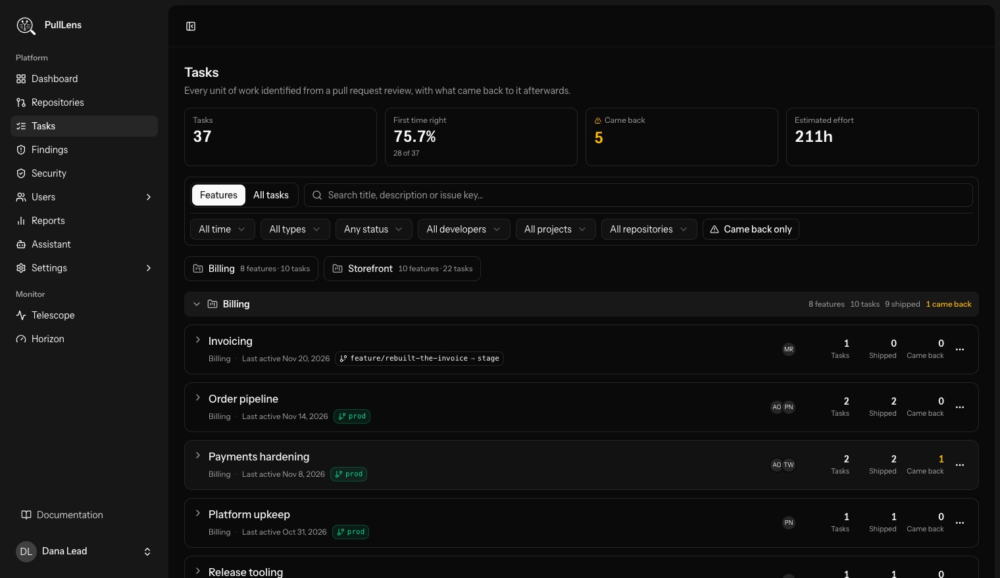
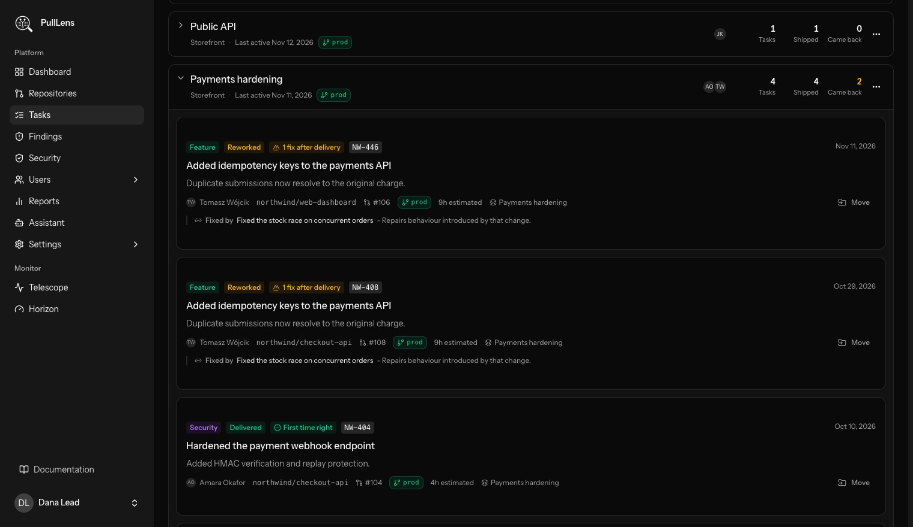
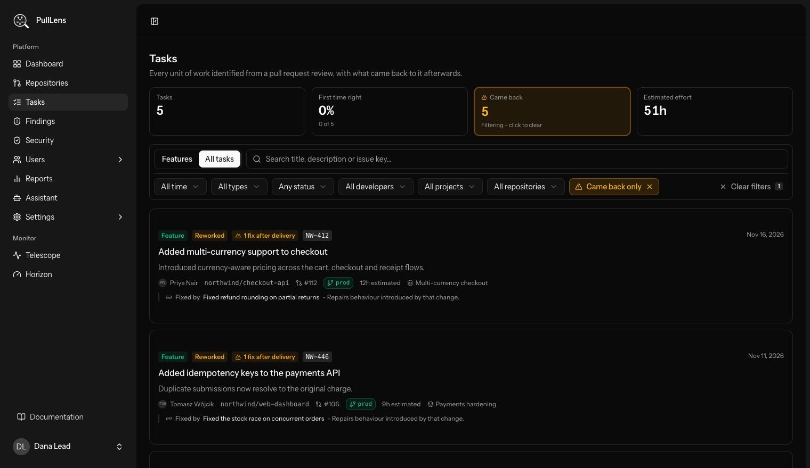
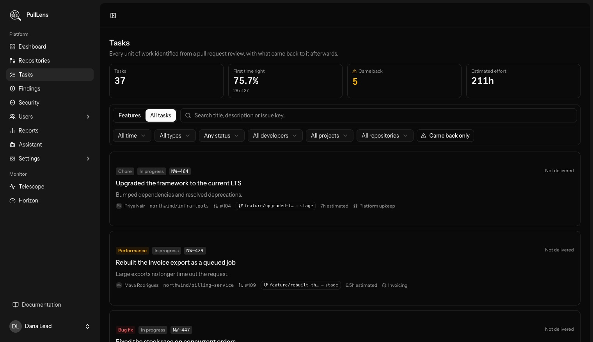
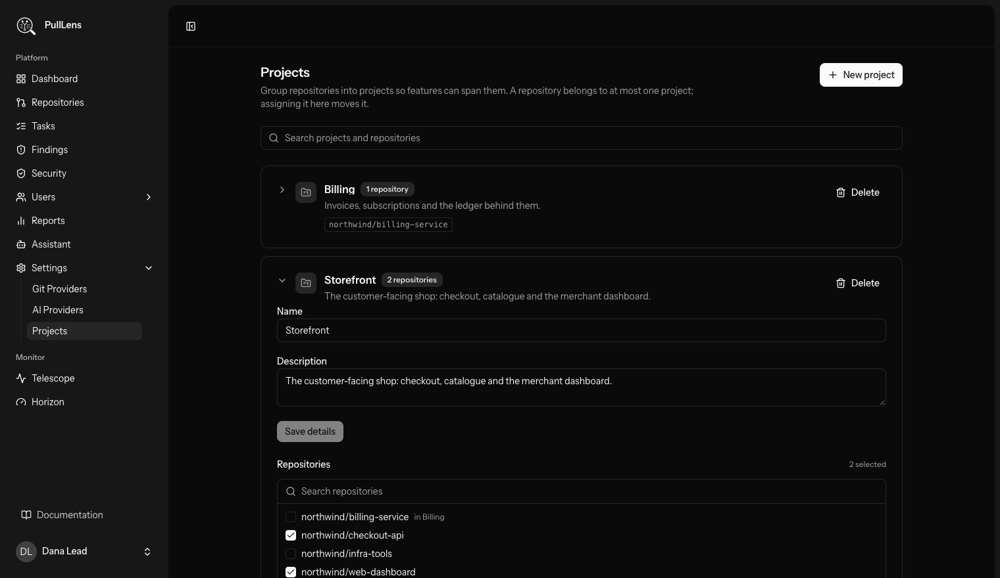

Tasks
Follow what your team is building - by project and feature, who is on it, where it has shipped and what came back - without asking anyone for a status update.

Why this page exists
If you lead a team, the hardest questions are the everyday ones: what is everyone working on, how far has it got, and is any of it coming back? The usual answers - standups, a ticket board someone has to keep up to date, scrolling merged pull requests - are either self-reported or out of date by the time you read them.
The tasks board answers them from the code itself. Every reviewed pull request is turned into named units of work, attributed to the developer who did it, grouped into the feature and project it belongs to, and followed afterwards: did it merge, did it reach production, did somebody have to fix it later? Nobody types a status in, so nothing goes stale.
A lead's weekly routine
- Open Tasks - the Features view is the default Projects with the most recent work are at the top, so what moved this week is what you see first. The strip above the list shows each project's feature and task totals at a glance.
- Scan each feature row Who worked on it (the avatars), when it was last touched, where the latest work lives now (the branch chip), and how many tasks shipped or came back.
- Expand anything that needs a closer look The feature opens into its tasks: type, status, developer, repository, pull request, estimate and what each one fixes or was fixed by.
- Press Came back only The board narrows to work that had to be fixed or reverted after it shipped. That is the list worth a conversation - about the area, the tests or the hand-off, not the person.
- Close the month in Reports Tasks delivered shows what each developer shipped and where the effort went, by feature.
The Features view
During review PullLens assigns each task to a feature - a short product-level name such as "Payments hardening" - reusing an existing feature when the work belongs to it. A month of pull requests becomes a handful of features you can actually reason about.
Features are grouped under their project (or their repository, when it is not in one). Projects come first, then standalone repositories; within each, the group whose newest task is most recent comes first, and inside a group the most recently active feature comes first.
| On each row | Meaning |
|---|---|
| Last active | When the newest task in the feature was delivered, or first seen if it has not merged yet. |
| Avatars | The developers who worked on it, most active first - who to ask about it. |
| Branch chip | Where the latest work lives now. See below. |
| Tasks | How many tasks the feature has in the current filters. |
| Shipped | How many of them have merged. |
| Came back | How many of them later had to be fixed or reverted. Highlighted when it is not zero. |
Each project heading carries its own totals - features, tasks, shipped and came back - and collapses to get it out of the way. Tasks with no feature sit in an Ungrouped row at the end.

Where the work is: the branch chip
The chip answers "has this shipped yet?" without opening GitHub.
| Chip | Means |
|---|---|
feature/x → stage | The pull request is still open: the branch, and where it is headed. |
stage | Merged into stage, and no release has carried it further yet. |
prod | Merged into stage and then promoted by a later stage → prod release merge. Hover the chip to see the path and the release pull request that carried it. |
PullLens follows release merges in the same repository: work that landed on a branch is promoted when a later pull request merges that branch onwards. A feature and its tasks always agree, because they use the same rule. It is a best-effort reading of your merge history, so a release done outside pull requests (a direct push to prod) is not seen.
Correcting the grouping
Managers and administrators can rename a feature, merge it into another, or move a single task to a different feature from the row's menu. A change made by hand is never overwritten by a later review.
What came back

Pressing the Came back tile, or the Came back only filter, narrows the board to work that shipped and was later fixed or reverted. Each task shows how many fixes it needed and links to the work that repaired it, so you can follow the thread in one click. Click a linked task to pivot the board to everything related to it.
A cluster here is a signal about an area of the code - missing tests, a tricky dependency, an unclear requirement - far more often than about a person. Use it to decide where to look, not what to conclude.
All tasks

The All tasks view lists every task on its own, newest first, with the same filters. Use it to search for a ticket, check one developer's week, or review a single repository.
What a task is
When PullLens reviews a pull request it also works out what that pull request delivered - described the way a developer would on a standup, not as a commit count. A pull request usually yields one or two tasks; one that adds an endpoint and also fixes an unrelated bug yields two.
Extraction happens inside the review that already runs, so tasks cost no extra AI call.
Task types
| Type | Means |
|---|---|
| Feature | New user-visible capability |
| Bug fix | Corrects broken behaviour |
| Refactor | Restructures without changing behaviour |
| Performance | Makes something faster or cheaper |
| Security | Closes or hardens a security gap |
| Tests | Adds or improves test coverage |
| Documentation | Written material rather than code |
| Chore | Build, config, dependencies, formatting |
Lifecycle
Status is derived from evidence, never typed in by anyone - that is what makes it trustworthy. A status somebody has to remember to update is a status that lies.
| Status | Means |
|---|---|
| In progress | Identified on a pull request that has not merged. |
| Delivered | Merged, and nothing has come back to it. This is the "right first time" state. |
| Revised | Later work extended or changed it. |
| Reworked | A later task had to fix a bug in it. |
| Reverted | Later work took it back out. |
When several could apply, the worst one wins - a task both extended and reverted reads as reverted.
How tasks connect
The reviewer is shown recent tasks from the same repository and asked whether the current work acts on any of them. Relationships are directional, and each carries the evidence for why it was drawn.
| Relation | Means |
|---|---|
| Fixes | Repairs a defect in earlier work. This is what marks the original reworked. |
| Extends | Builds on earlier work that was not broken. |
| Reverts | Removes the earlier change. |
| Duplicates | Redoes work already done. |
| Relates to | Connected, but none of the above. |
Each row shows both directions - what it fixes, and what fixed it - with the reason, so an AI-proposed link can be judged rather than taken on trust. A link a person created is marked manual and is never overwritten by a later review.
The four tiles
| Tile | Meaning |
|---|---|
| Tasks | How many match the current filters. |
| First time right | Share that shipped and never came back, with the count underneath. Shows a dash rather than 0% when nothing has shipped yet. |
| Came back | How many had to be fixed or reverted. Click it to filter the board to them; click again to clear. |
| Estimated effort | Summed AI effort estimates. A rough sizing signal, not a timesheet. |
Filters
| Control | Notes |
|---|---|
| Search | Title, description and issue key. Typing PROJ-451 finds the work for that ticket. |
| Period | Includes This month and Last month as true calendar months. |
| Type / Status / Developer | Standard filters. |
| Project / Repository | Narrow to one product, or one repository. The options only list what you can see. |
| Came back only | Just the work that needed fixing - the fastest route to a quality conversation. |
| Clear filters | Appears with a count once any filter is set. |
Projects

By default a feature belongs to one repository. A project groups the repositories that make up one product or client - an API, a web app and a mobile app, say - so a feature can span all of them and the board can show the product as one group. Managers and administrators manage projects under Settings → Projects: create one with New project, then tick its repositories. A repository can be in only one project, and a repository in none keeps its own features.
The same page lists each repository's profile tags - its languages, frameworks and domain, suggested by the AI and editable by hand. They give the reviewer context about the codebase.
Grouping tasks recorded earlier
Tasks recorded before features existed start out ungrouped. On Settings → Projects the Group existing tasks button first shows a preview - how many tasks it will sort and roughly how many AI calls that takes - then runs with a progress indicator. It carries on if you close the dialog, and tasks you sorted by hand are left alone.
The same can be done from the command line, for one project or one repository:
php artisan tasks:group-features --project=<id or name>
php artisan tasks:group-features --repository=<id or owner/name>Pass exactly one of the two options. --repository is for a repository that is not in a project.
Issue tracker keys
PullLens detects keys such as PROJ-451 in branch names, titles and descriptions and stores them against the task. Set TASK_TRACKER and TASK_TRACKER_BASE_URL to turn them into links. Detection is conservative and skips false positives like UTF-8. There is no Jira integration yet - this is the key it will join on when there is.
Who sees what
The board needs the tasks.view permission. A user limited to certain repositories sees only their tasks, features and projects - totals, filters and the project strip all narrow to what they were granted. See Users, roles and access.
Tasks are recorded from the moment PullLens starts reviewing; history is not backfilled, although earlier tasks can be grouped under features. The rework signal in particular needs time, because a task is only marked reworked when a future pull request fixes it.